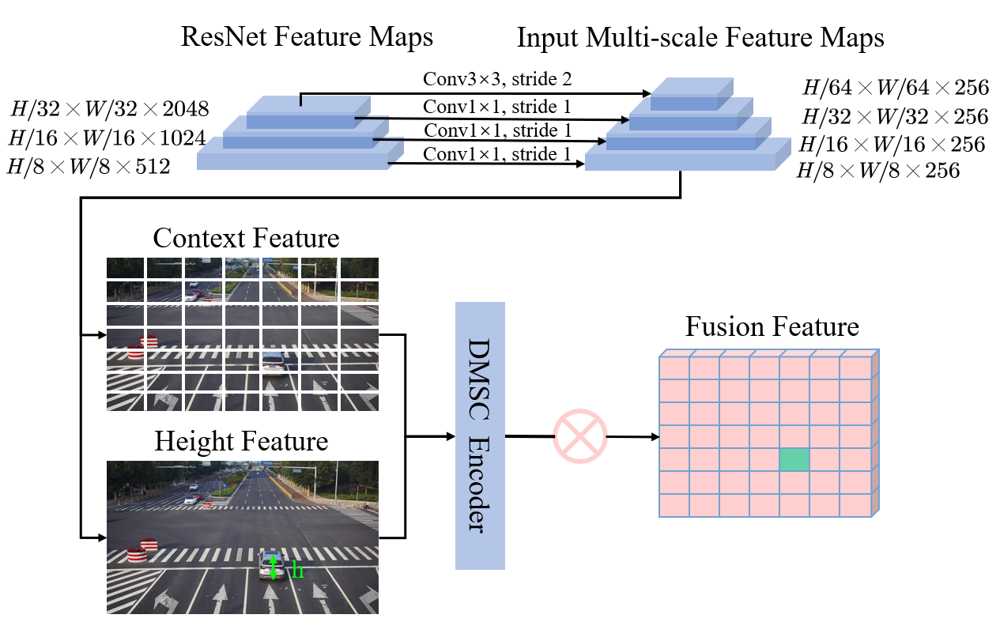
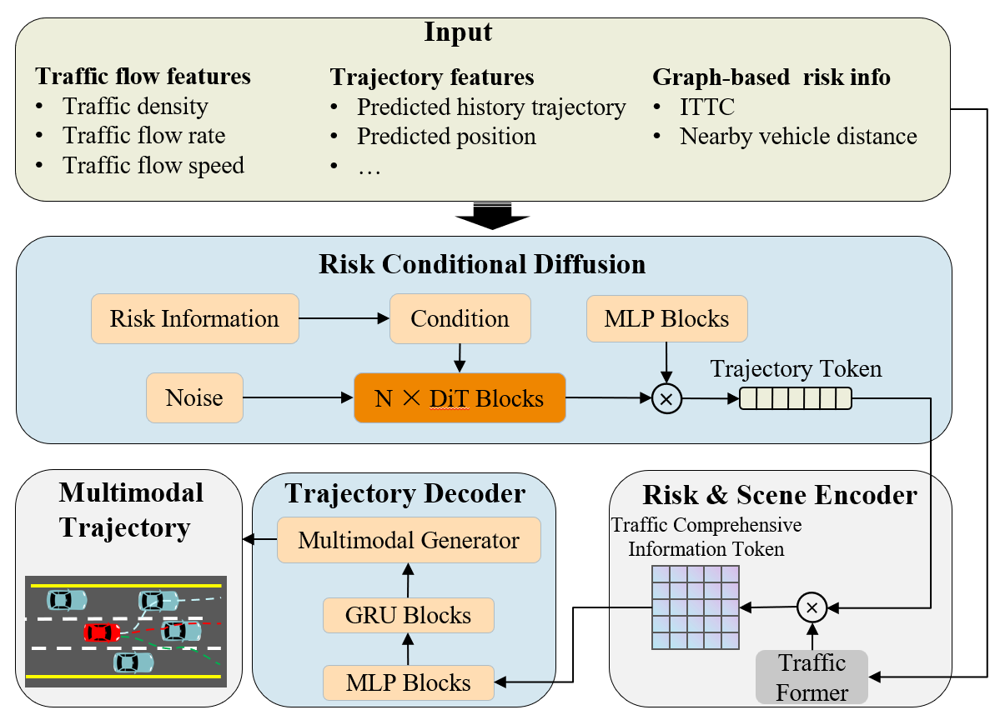

News
- July 2025: Our paper "Roadside Monocular 3D Detection via Cross-View Semantic Alignment" was accepted by ITSC 2025.
- April 2025: My project on federated learning for collaborative perception was sponsored by Jiangsu Province.
- September 2024: Two papers recommended to present at TRB Annual Meeting.
|
|

|
Roadside Monocular 3D Detection via Cross-View Semantic Alignment
Pei Liu, Zihao Zhang, Haipeng Liu, Yiqun Li, Junlan Chen, Ziyuan Pu.
Transportation Research Board (TRB) / IEEE ITSC, 2025
paper
This paper proposes a method for monocular 3D object detection from roadside perspective, using height information and context alignment to improve accuracy.
|
|

|
Risk-Informed Diffusion Transformer for Long-Tail Trajectory Prediction in the Crash Scenario
Junlan Chen, Pei Liu, Zihao Zhang, Hongyi Zhao, Ziyuan Pu.
Transportation Research Board (TRB), 2025
paper
Addressing trajectory prediction challenges in rare and complex traffic scenarios.
|
|
Traffic Agent Behavior Analysis
|
Optimizing charging station locations for mixed traffic of electric and gasoline vehicles: a stochastic user equilibrium approach
Bing Zeng, Xinlian Yu, Zihao Zhang, Ziyuan Pu.
Transportation Research Part E: Logistics and Transportation Review, 2025
Investigating the charging behavior of electric vehicles in China.
|
Identification of the factors influencing speeding behaviour of food delivery e-bikers in China with the naturalistic cycling data
Zihao Zhang and Chenhui Liu.
International Journal of Occupational Safety and Ergonomics, 2025
Investigating the speeding patterns and influencing factors of food delivery riders in urban areas.
|
Exploration of the Characteristics of Elderly-Driver-Involved Single-Vehicle Hit-Fixed-Object Crashes in Pennsylvania, USA
Xuerui Hou, Zihao Zhang, Xue Su, Chenhui Liu.
Applied Sciences, 2025
Analyzing the characteristics of elderly-driver-involved single-vehicle hit-fixed-object crashes in Pennsylvania, USA.
|
Exploration of the Heterogeneity Among Elderly Drivers
Zihao Zhang and Chenhui Liu.
SAE International, 2024
Analyzing the heterogeneous driving behaviors among elderly drivers to improve road safety.
|
Exploration of Riding Behaviors of Food Delivery Riders
Zihao Zhang and Chenhui Liu.
Sustainability, 2023
Investigating the riding patterns and safety issues of food delivery riders in urban areas.
|
Why the Elderly Do Not Travel
Zihao Zhang and Chenhui Liu.
CICTP, 2023
Understanding mobility barriers and travel behavior of elderly populations.
|
Research
My research interests span several areas in intelligent transportation and autonomous driving:
- 3D Object Detection: Monocular and multi-view perception for autonomous driving
- Trajectory Prediction: Long-tail scenarios and behavior modeling
- Driving Behavior Analysis: Elderly drivers, delivery riders, and vulnerable road users
- Roadside Perception: Infrastructure-based sensing systems
|
|